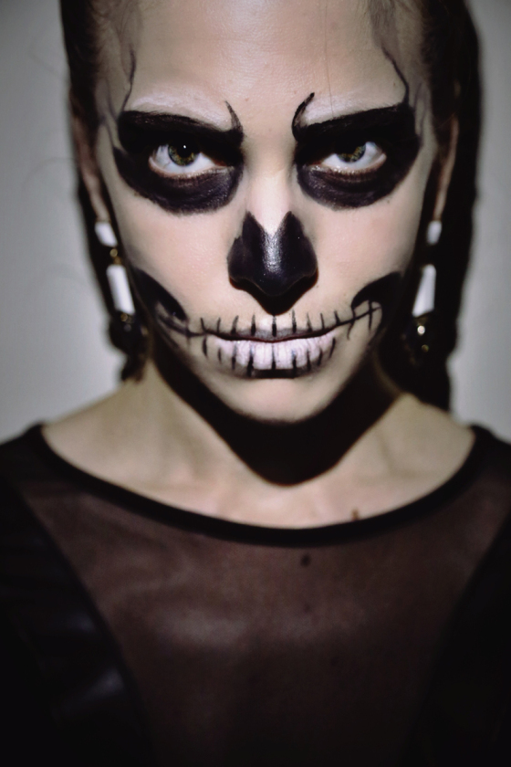

This look is perfect for you if picking out a Halloween costume ended up at the bottom of your to-do list this year. This glam skeleton look will have you ready for a spooky night out on the townn in less then an hour!
Apply you base foundation/facepaint, ensure all face and neck are evenly covered.
Outline your eye sockets with you black liquid eyeline. The circles will look best if they're not perfrect, so don't worry if they're not exactly the same shape
Fill in the eye sockets with black eyeshadown usinf an eyeshadow brush
Colour your lips in with the white eyeline pencil
Using the liquid eyeline, draw a line from the corner of your mouth towards your ear, about 3 inches, on both sides
Draw a vertical line down the center Of your mouth from your top lip to your bottom lip. Repeat this along your mouth and up the lines you drew going up your cheeks.
Using the liquid line outline 2 hollow areas on the side of your face; one hollow are should be close to your teeth and the other hollow are should be close to your ear on your cheekbone
Connect the 2 hollows. Fill in all the hollow area beneth your cheek bone, fading out more and more as you reach the jawline, to make the face aooear sunken
Connect the last two top teeth on both sides of the mouth to the hallow area closest to your teeth
Using the black eyeshadow, shade underneath your jawline and down your neck. Your neck will appear more emaciated if you concentrate the shadow on the sides of your neck while leaving a section of natural skin visible down the center
Lightly shade around the hairline with black eyeshadown
Using an angled eyeliner brush, pull the excess eyeshadow from the inner corners of your eyebrows up and into a curved line on both sides
Similarly, pull the excess eyeshadow on the outside of your eye sockets into several lines, toward your hairline